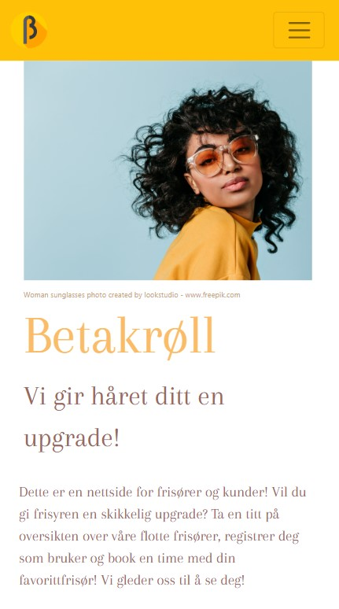

Back to first floor
Some projects I've made:
-
Betakrøll - hairapplication
About: An application for a fictive hairsalon to register new customers, book hairdressing appointments and
see information about the hairsalon and each customers bookings.
Tech: Used Django framework and bootstrap. Cooperation assignment through one semester. Using software engieneering
principles like user stories, scrum, GitLab, testing.
